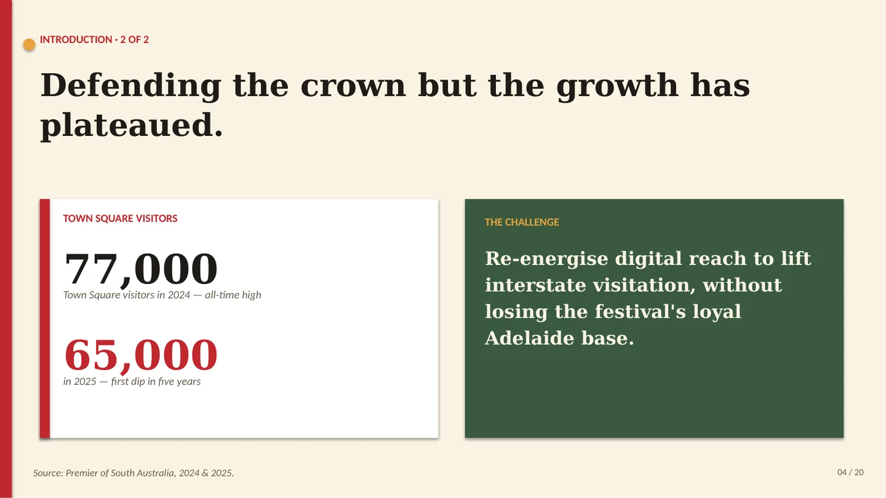
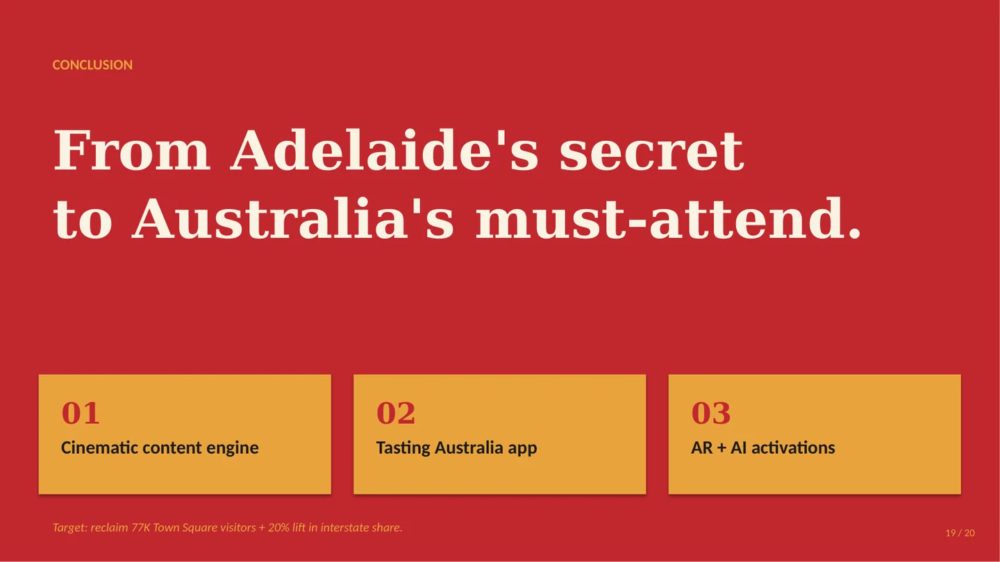

Tasting Australia
A digital marketing plan for the Adelaide Economic Development Agency to lift national awareness of South Australia's flagship food and wine festival and turn it into attendance and longer stays.
- Grade
- Pitch: High Distinction
- Course
- Digital Media in Business
- Type
- Team of four, 2026
- My part
- Executive summary, introduction and conclusion; co-presented the Pecha Kucha pitch

The problem
In its 19th year the festival runs more than 150 events over ten days, yet Town Square visitors fell from an all-time high of 77,000 in 2024 to 65,000 in 2025, the first dip in five years. The brief: re-energise digital reach to lift interstate visitation without losing the loyal Adelaide base.
The plan, across four channels
- ContentSEO-led guides, audience-specific journeys, email and short-form video.
- SocialCreator-led, user-generated storytelling on Instagram and TikTok.
- MobileA festival app, geofenced alerts and mobile-first ticketing.
- Emerging techAR menu filters, an AI festival planner and VR previews.



The written plan
Alongside the pitch, the team delivered a full digital marketing plan with a SWOT analysis and channel recommendations. I wrote the executive summary, introduction and conclusion.
Select a page to read it full size.
Next project
Who the Limit Rewards